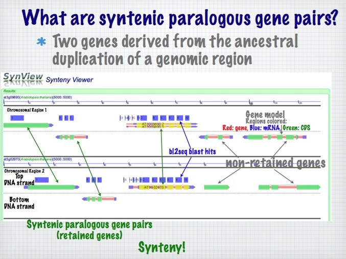
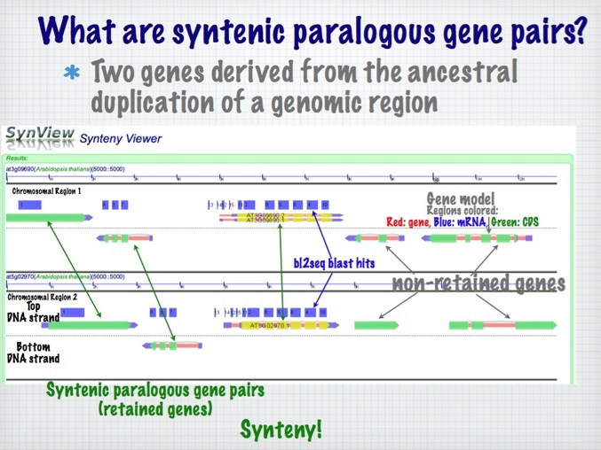

What is CoGe?
CoGe's name is derived from the phrase "Comparative Genomics" which is the field of computational biology that is centered on the discovery of patterns in genomes through inter and intra-genomic comparisons. These patterns are interesting because they reflect the function or evolutionary history of genomes, genomic regions, and/or genomic features (e.g. genes). Examples of such genome patterns are:
1. Series of orthologous/paralogous genes that have a conservation of order in a genome. Two or more genomic regions (either within the same organism or between different organisms) that have a conservation of homologous gene order is indicative that the genomic regions shared a common ancestral genomic region. Such regions are called syntenic and in the case of intragenomic detection, are used to determine if an organism experienced a large segmental or genome-wide duplication event. Please see figure 1 for an example of synteny using our comparative genomics tool SynView.

 

Figure 1. SynView's graphical results (above) compares a syntenic region in Arabidopsis from its most recent genome duplication (tetraploidy) event. Each horizontal image represents a genomic region with the dashed line in the middle representing the division between the top and bottom DNA strands. Each region has two gene models on their top strands drawn as red, blue, green and yellow arrows closest to the center dashed line (gene, mRNA, and CDS models respectively, CDSs are colored yellow if those genes were used to center the genomic regions). The blue UTRs imply cDNA evidence. Blast HSPs are drawn as blue boxes and are numbered as pairs between the two regions. You will notice that each genomic region contains 5 genes. The left three genes in each region have a paralogous partner gene in the opposing region and the pairs are denoted by green arrows. This can be seen by the regions of sequence similarity as denoted by the series of blast HSPs. Each region also has two genes on the left that do not have paralogous genes in the opposing region. These genes are are marked "non-retained genes" because they have not been retained in duplicate from the duplication event that created this syntenic region. Also note that there are a series of blast HSPs in the non-coding region of the center pair of paralogous genes (gene models have yellow CDSs). These are conserved non-coding sequences (CNSs) and are assumed to have some function because their sequences have been conserved since the duplication (25-70 million years ago) and subsequent divergence of these two genes. In plants, CNSs are likely to bind regulatory proteins, and are unlikely to either encode or bind small RNAs. (Thomas et al. 2007).
2. Conserved Non-coding Sequences (CNSs) around orthologous/paralogous genes. These sequences are presumed to be under evolutionary selective constraints because they have a function (probably involved with the regulation of gene expression either directly through the recruitment of transcription accessory factors/proteins or indirectly through chomatin remodeling.) Please see figure 1.
3. Gene annotations. By comparison of syntenic regions, homologous genes can be detected through their conservation of sequence. If there is a difference between the regions of sequence similarity and the annotated gene models, this is evidence that one (or more) of the gene models is incorrect. This is useful information to have if you are researching a mis-annotated gene. Please see figure 2.
Figure 2. SynView's graphical results compares two pairs of paralogous genes from syntenic regions in Arabidopsis. Notice that there is probably an error in the left gene model in the lower genomic region (AT5G05770.1). By comparison to the syntenic region on chromosome 3, you will notice that the gene model for At3G11260.1 has UTRs (blue portion of the arrow that extend beyond the yellow arrow representing coding sequence). There are also HSPs (14 and 12) in the coding sequence for gene At3G11260.1, and likely represents missed coding sequence in the annotation of At5G05770.1.
4. The pattern of gene gain or gene loss events between syntenic regions. By comparison of three syntenic genomic regions, the evolution of how genes are retained, lost, or gained can be determined. See our work comparing Arabidopsis and papaya.
There are already many existing databases and tools for accessing genomic information. Why make another set of resources?
A current limitation of many genome databases is their organism centric organization. For example, Ensembl's genome database is designed to store a single organism's genome; thus Ensembl requires a separate installation of their database for each genome. This approach limits the tractability and maintainability of genomic information as each new genome or new release of an existing genome requires a separate database installation. Likewise, this "one genome–one database" approach also limits the development and deployment of new comparative genomics tools. If new tools or data organization schemas are developed for one genome, redeploying them for previously existing genomes requires patching each installation separately. Here we have developed a new database and application programming interface (API) to store multiple genomes in one unified system.
The principal objective of this effort is a relational database schema that allows for the tracking of any genome in an organism non-specific manner that also allows for the co-existence of multiple versions of the same genome. By having a unified database for all genomes, any tool developed for analyzing one organism's genome is immediately available to all genomes in the database. This approach also makes the development of comparative genomic tools easier by having all genomic information in one centralized location, and similarly, if comparative genomic tools are developed to analyze one set of genomes, they are immediately available to any set of genomes.
What is in CoGe's system?
CoGe is a collection of software resources that includes a database, visualization packages, and analysis tools. These items can be used to create software tools to access and analyze genomic information in any number of ways. Tools that we develop tend to fall into three general categories: APIs, command-line tools, and web-based tools. The APIs (application programming interfaces) are an on-going collection of libraries used to access genomic information in the CoGe database, generate visual representation of genomic information, and give access to other informatics tools and algorithms developed in-house. Command-line tools usually center around data import and export from the genomes database. Web-based tools utilize web 2.0 design principles to make interactive and easy–to-use comparative genomic analysis and visualization tools. These tools are made available for general use on the CoGe web-site.
What software models, databases, and languages are used by CoGe?
The CoGe database is written for MySQL. Its design focuses on minimizing data redundancy and maximizing data retrieval speeds while maintaining simplicity of data structures and relationships. The core of the CoGe database centers on the storage of any genome, paying attention to the need to accommodate genomes for different sources (e.g. genbank, TIGR, JGI, Ensembl), multiple datasets for a given genome (e.g separate datasets for each chromosome, additional annotation information for a given genome), and accommodating multiple versions of a given genome (although data quality should increase as a function of time, analyses performed on old datasets require old the old datasets for subsequent validation efforts).
APIs, components of web-tools, and most command-line tools are written in PERL. PERL's near ubiquitous presence in web applications and bioinformatics, extensive additional libraries for performing web-based and database transactions, and large user base makes it an ideal language for CoGe. We use PERL's object oriented programming style extensively as well as POD for API documentation.
Additionally, we use javascript, AJAX, and Web 2.0 design principles for designing easy-to-use, desktop-like web-based tools.
Who is CoGe?
The author, project manager, and lead program of CoGe is Eric Lyons in the Freeling-Thomas group at the University of California, Berkeley.